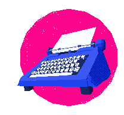

Cobalt typewriter

Drag to orbit. Tap a key to press it. With the viewer focused, use the arrows and physical keys. Esc resets the view.

Drag to orbit. Tap a key to press it. With the viewer focused, use the arrows and physical keys. Esc resets the view.